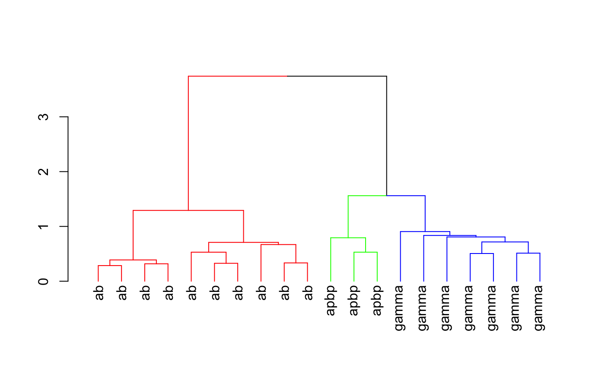

Given an NBLAST all by all score matrix (which may be specified by a package
default) and/or a vector of neuron identifiers use hclust to
carry out a hierarchical clustering. The default value of the distfun
argument will handle square distance matrices and R dist objects.
nhclust(neuron_names, method = "ward", scoremat = NULL, distfun = as.dist, ..., maxneurons = 4000)
| neuron_names | character vector of neuron identifiers. |
|---|---|
| method | clustering method (default Ward's). |
| scoremat | score matrix to use (see |
| distfun | function to convert distance matrix returned by
|
| ... | additional parameters passed to |
| maxneurons | set this to a sensible value to avoid loading huge (order N^2) distances directly into memory. |
An object of class hclust which describes the tree
produced by the clustering process.
Other scoremats: sub_dist_mat
#># divide hclust object into 3 groups library(dendroextras) dkcs=colour_clusters(hckcs, k=3) # change dendrogram labels to neuron type, extracting this information # from type column in the metadata data.frame attached to kcs20 neuronlist labels(dkcs)=with(kcs20[labels(dkcs)], type) plot(dkcs)# 3d plot of neurons in those clusters (with matching colours) open3d()#> glX #> 3#> [1] "FruMARCM-F000706_seg001" "FruMARCM-M000842_seg002" #> [3] "GadMARCM-F000050_seg001" "FruMARCM-M001339_seg001" #> [5] "FruMARCM-F001115_seg002" "FruMARCM-M001051_seg002" #> [7] "FruMARCM-F001494_seg002" "FruMARCM-F000188_seg001" #> [9] "FruMARCM-F000270_seg001" "FruMARCM-F001929_seg001" #> [11] "GadMARCM-F000423_seg001" "GadMARCM-F000142_seg002" #> [13] "ChaMARCM-F000586_seg002" "FruMARCM-M001205_seg002" #> [15] "GadMARCM-F000122_seg001" "GadMARCM-F000476_seg001" #> [17] "FruMARCM-F000085_seg001" "GadMARCM-F000071_seg001" #> [19] "FruMARCM-M000115_seg001" "GadMARCM-F000442_seg002"